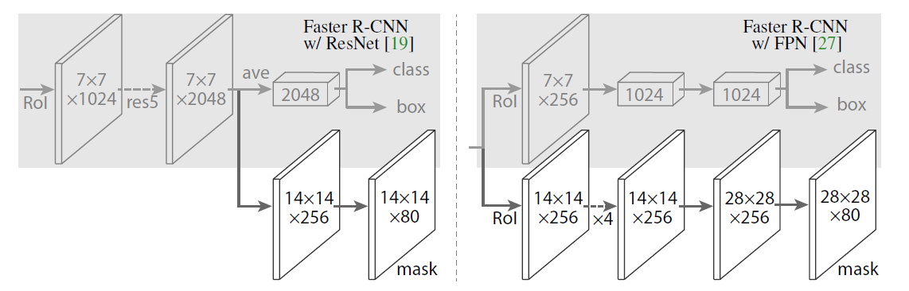
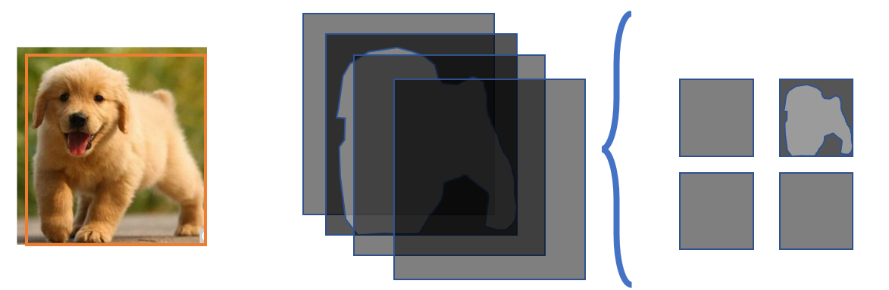
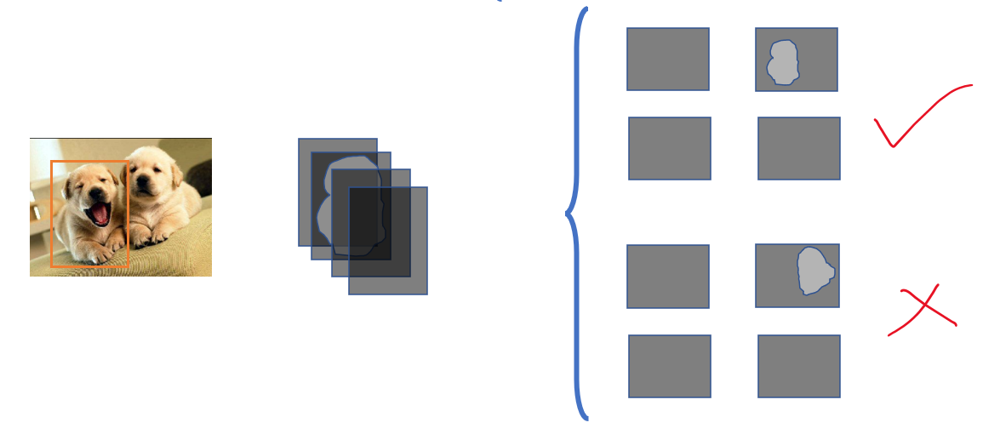
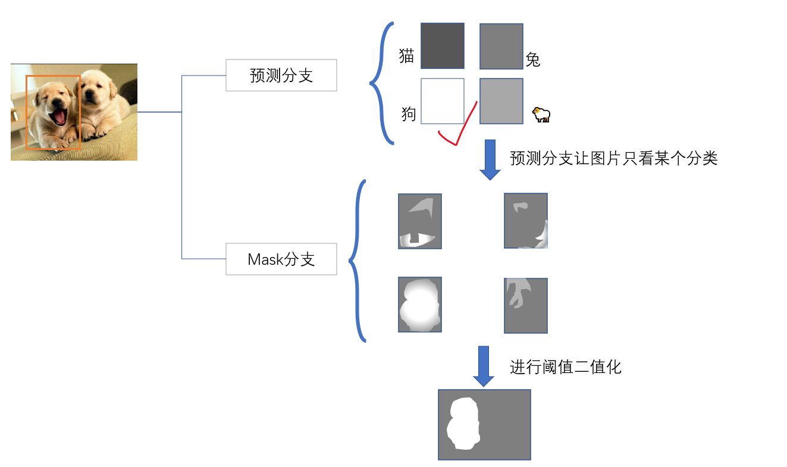
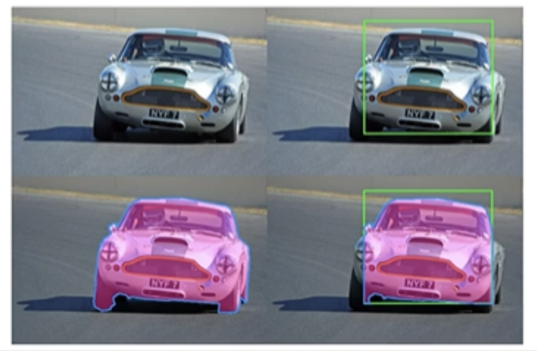
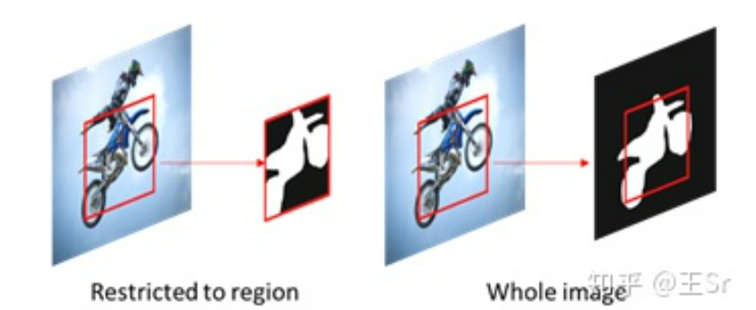
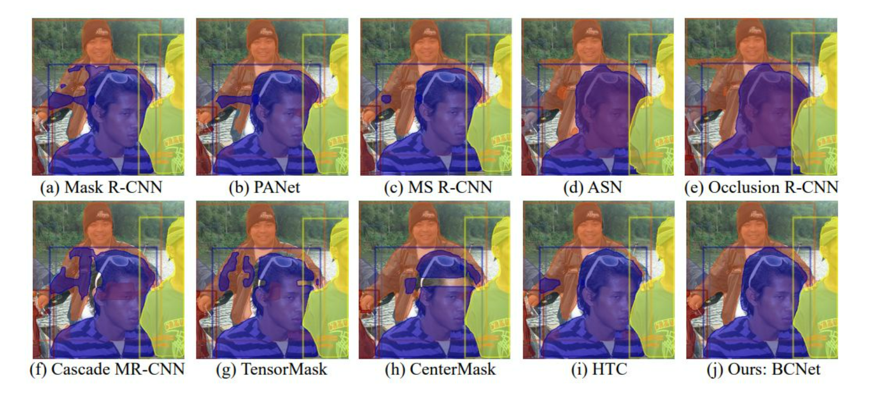
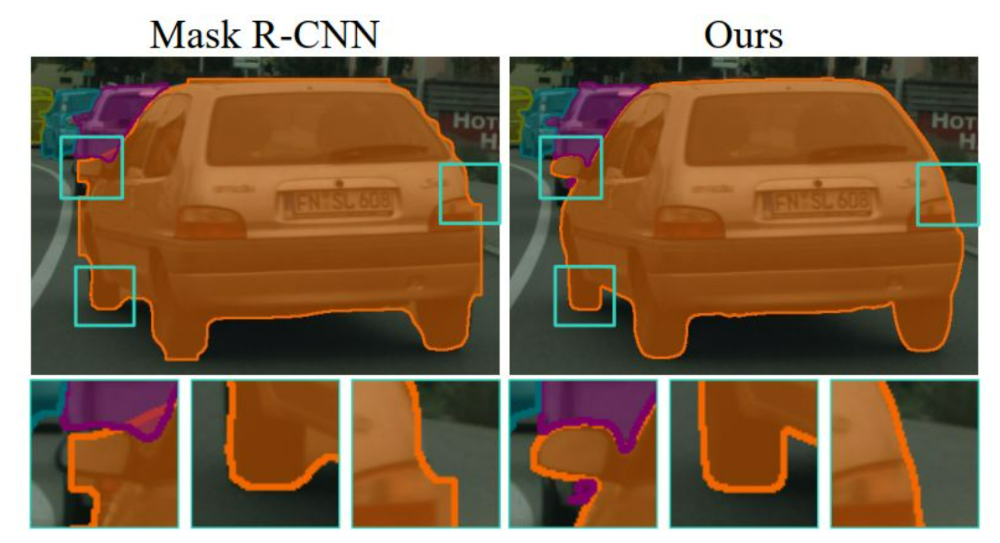
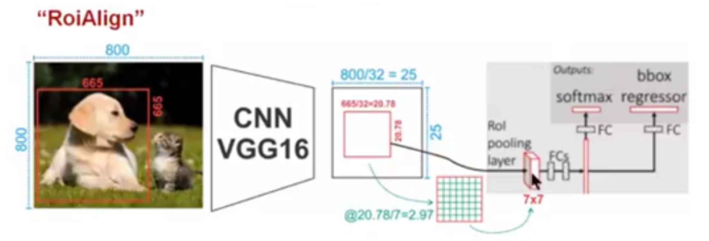

文章标题：
文章链接：Mask_RCNN
发表时间：2017-03
MaskRCNN在FastRCNN的基础上加入了对于实例掩膜的预测分支，通过bounding box回归检测出每一个物品之后，再对回归框中的每一个像素进行分类，完成语义分割。这样的就实现了实例分割，即目标检测+语义分割=实力分割！
训练时，通过当前得到的真实mask中的类别class_id，遍历所有的预测mask，找到class_id类别所对应的预测mask(前向传播中介绍过每个类别都有一个预测mask)，比较真实mask与预测mask每个像素点信息，用的是binary_cross_entropy二分类交叉熵损失函数 
实例分割  

边框回归的精度会影响到实例分割的结果  解决方案无论region有多大，我们都去在全图范围内预测（whole image） 
高度遮罩问题  解决方案Deep Occlusion-Aware Instance Segmentation with Overlapping BiLayers 引入GCN，实现对于遮罩物体和被遮罩物体的检测
分割边缘粗糙  解决方案Look Closer to Segment Better:Boundary Patch Refinement for Instance Segmentation
